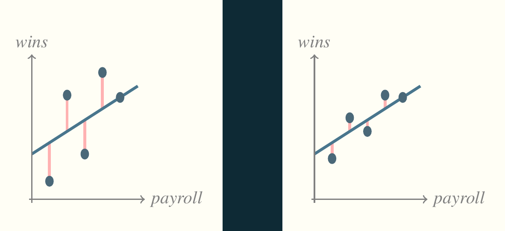
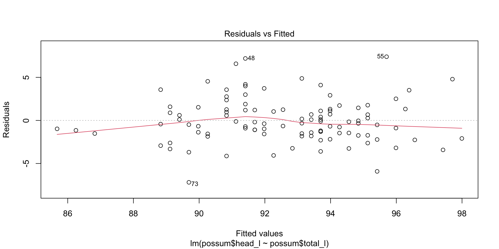

Call:
lm(formula = possum$head_l ~ possum$total_l)
Coefficients:
(Intercept) possum$total_l
42.7098 0.5729 Stats:
Linear Regression
Mick McQuaid
2024-03-20
Week NINE
Homework

Linear Regression
Finally, the heart of the course
Basis for the prediction line
\[ y=\beta_0 + \beta_1 x + \epsilon \]
(pronounced y equals beta nought plus beta one x plus epsilon)
What we actually see
We see sample data and estimate the preceding equation using data. The estimated regression equation is
\[ \hat{y}=b_0+b_1x \]
Notice that there’s no epsilon. We assume that the mean of the epsilon values is zero. (And we’ll learn how to check that later.)
Names of the variables
\(x\): explanatory variable, predictor, input
\(y\): response, output
Example from textbook: brushtail possums
The textbook gives the regression equation for a model predicting the head length of a brushtail possum given its overall length as follows:
\[ \hat{y}=41+0.59x \]
In other words, the head length is 41mm plus a fraction 0.59 of the total length.
Using R to find the equation
Remember epsilon? Now a new term, residual
The term epsilon or \(\epsilon\) in the idealized regression equation refers to the divergence of each point from what the model predicts. It’s the pink line in our initial pictures. In the above regression models, each divergence of a single point is called a residual.
Assessing a model with residuals
Think back to the first picture (reproduced below). The residuals are the key to assessing the model.

Plotting the residuals
Correlation
Correlation is a number in the interval \([-1,1]\) describing the strength of the linear association between two variables. The most common measure of correlation (and the only one our textbook bothers to mention) is Pearson’s correlation coefficient, \(r\).
\[r = \frac{1}{n-1}\sum_{i=1}^{n}\frac{x_i-\bar{x}}{s_x}\frac{y_i-\bar{y}}{s_y}\]
Values of \(r\)
\(r=-1\) means that two variables are perfectly negatively correlated.
\(r=0\) means that two variables are completely uncorrelated.
\(r=1\) means that two variables are perfectly positively correlated.
Little r and big R
Every other textbook I’ve ever seen makes a distinction between \(r\), Pearson’s correlation coefficient, and \(R\), the square root of the multiple coefficient of determination. Our textbook, Diez, Çetinkaya-Rundel, and Barr (2019), does not. That’s kind of okay if there is only one predictor, \(x\). It won’t work later when we study multiple regression and assume that more than one input affects the output.
Keep in mind that, in the R language, \(R\) always refers to the square root of the multiple coefficient of determination, which happens to be the same as for \(r\) if there is only one predictor variable.
Correlation exercises
Page 314ff of the textbook includes some correlation exercises we can do.
Least squares
How did we arrive at the estimates for slope and intercept? We used a time-honored technique called least squares, which has been around for about two hundred years. It consists of minimizing the sum of squares of the residuals, which are often abbreviated as SSR, SSE, or RSS. To use this technique, we have to make some assumptions and can then use two equations to find the slope and intercept.
Assumptions
- linearity: the data should follow a linear trend—there are advanced regression methods for non-linear relationships
- normality of residuals: The residuals are approximately normally distributed (evaluated with a QQ plot)
- constant variability: The residuals don’t follow a pattern (the most common being a right-facing trumpet)
- independent observations: Usually don’t apply least squares to seasonal data, for example, because its structure can be modeled as a time series
Least squares equations
\[ b_1=\frac{s_y}{s_x}r\]
\[b_0=\bar{y}-b_1\bar{x}\]
Interpreting slope and intercept
Slope: how much \(y\) grows or shrinks for a one-unit increase in \(x\)
Intercept: how large \(y\) would be if \(x\) were 0 (only works if \(x\) can be zero)
The most common measure of fit
\(r\) is in the interval \([-1,1]\) but \(R^2\) is in the interval \([0,1]\) so \(R^2\) the multiple coefficient of determination represents the proportion of variability in the data that is explained by the model. The adjusted \(R^2\) accounts for a problem with \(R^2\) that we will discuss later. In the case of simple linear regression there is almost no difference.
Example of \(R^2\) for brushtail possum regression
Call:
lm(formula = possum$head_l ~ possum$total_l)
Residuals:
Min 1Q Median 3Q Max
-7.1877 -1.5340 -0.3345 1.2788 7.3968
Coefficients:
Estimate Std. Error t value Pr(>|t|)
(Intercept) 42.70979 5.17281 8.257 5.66e-13 ***
possum$total_l 0.57290 0.05933 9.657 4.68e-16 ***
---
Signif. codes: 0 '***' 0.001 '**' 0.01 '*' 0.05 '.' 0.1 ' ' 1
Residual standard error: 2.595 on 102 degrees of freedom
Multiple R-squared: 0.4776, Adjusted R-squared: 0.4725
F-statistic: 93.26 on 1 and 102 DF, p-value: 4.681e-16Categorical variables with two categories
For linear regression, we can NEVER use categorical variables as \(y\), but we often use them as \(x\). The textbook gives an example of sales of Mario Kart game cartridges, where the variable cond takes on the categories new and used. The following frame is a regression of total price (total_pr) on condition (cond).
Categorical variable example
Summary of the preceding model
Call:
lm(formula = mariokart$total_pr ~ mariokart$cond)
Residuals:
Min 1Q Median 3Q Max
-18.168 -7.771 -3.148 1.857 279.362
Coefficients:
Estimate Std. Error t value Pr(>|t|)
(Intercept) 53.771 3.329 16.153 <2e-16 ***
mariokart$condused -6.623 4.343 -1.525 0.13
---
Signif. codes: 0 '***' 0.001 '**' 0.01 '*' 0.05 '.' 0.1 ' ' 1
Residual standard error: 25.57 on 141 degrees of freedom
Multiple R-squared: 0.01622, Adjusted R-squared: 0.009244
F-statistic: 2.325 on 1 and 141 DF, p-value: 0.1296Least squares exercises
Page 325 has some exercises we can try.
Outliers
Page 329 shows six different kinds of outliers, while page 328 has a description of them. Do you agree with the textbook assessment?
Leverage
Points far from the horizontal center have high leverage, in the sense that they can pull the regression line up or down more forcefully than can outliers near the horizontal center.
Influential points
A subset of high leverage points are those that actually exercise this high leverage and do pull the regression line out of position.
It can be dangerous to remove these points from analysis for reasons explored in a book called The Black Swan.
Software
Let’s examine the models we generated previously.
Call:
lm(formula = mariokart$total_pr ~ mariokart$cond)
Residuals:
Min 1Q Median 3Q Max
-18.168 -7.771 -3.148 1.857 279.362
Coefficients:
Estimate Std. Error t value Pr(>|t|)
(Intercept) 53.771 3.329 16.153 <2e-16 ***
mariokart$condused -6.623 4.343 -1.525 0.13
---
Signif. codes: 0 '***' 0.001 '**' 0.01 '*' 0.05 '.' 0.1 ' ' 1
Residual standard error: 25.57 on 141 degrees of freedom
Multiple R-squared: 0.01622, Adjusted R-squared: 0.009244
F-statistic: 2.325 on 1 and 141 DF, p-value: 0.1296The coefficents table
There are five columns in the coefficients table
- Estimate: the coefficient estimate (\(b_0, b_1\)) of the parameter (\(\beta_0,\beta_1\))
- Std Error: the standard error of the coeffient (stdev scaled by sample size)
- t value: the ratio of the estimate to its standard error
- Pr(>|t|): the p-value of the t-statistic
- Significance codes (unlabeled): category the p-value falls into
Hypothesis tests
The coefficients table tells us all we need to know to conduct a hypothesis test concerning an estimate, where the hypothesis is typically whether the true value of the coefficient is zero. If it is zero, the input variable associated with the coefficient is not linearly related to the output or response variable.
Confidence intervals
By default, R gives a ninety-five percent confidence interval for all coefficients. Notice that condition: used includes zero, highlighting the unreliability of the estimate.
Computing confidence intervals by hand
\[b_i \pm t^*_{df} \times SE_{b_i}\]
For the mariokart model, \(t^*_{df}\) can be found for the ninety-five percent confidence interval by
and \(b_i\) and \(SE_{b_i}\) are given in the coefficients table.
Inference for linear regression exercises
Page 335 of the textbook has exercises in inference we can try.
END
References
Diez, David, Mine Çetinkaya-Rundel, and Cristopher D Barr. 2019. OpenIntro Statistics, Fourth Edition. self-published. https://openintro.org/os.
Mendenhall, William, and Terry Sincich. 2012. A Second Course in Statistics, Regression Analysis, Seventh Edition. Boston, MA, USA: Prentice Hall.
Colophon
This slideshow was produced using quarto
Fonts are Roboto Condensed Bold, JetBrains Mono Nerd Font, and STIX2